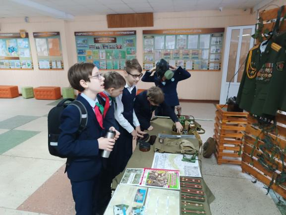
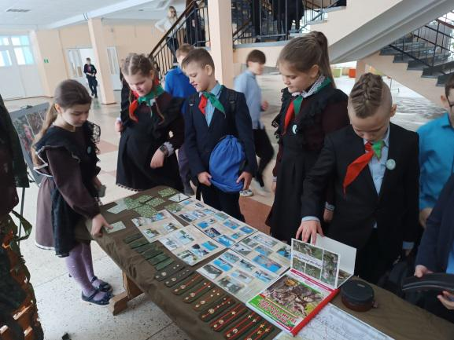
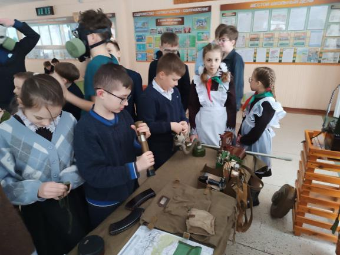
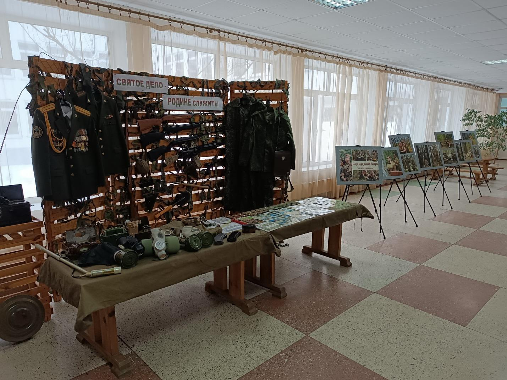
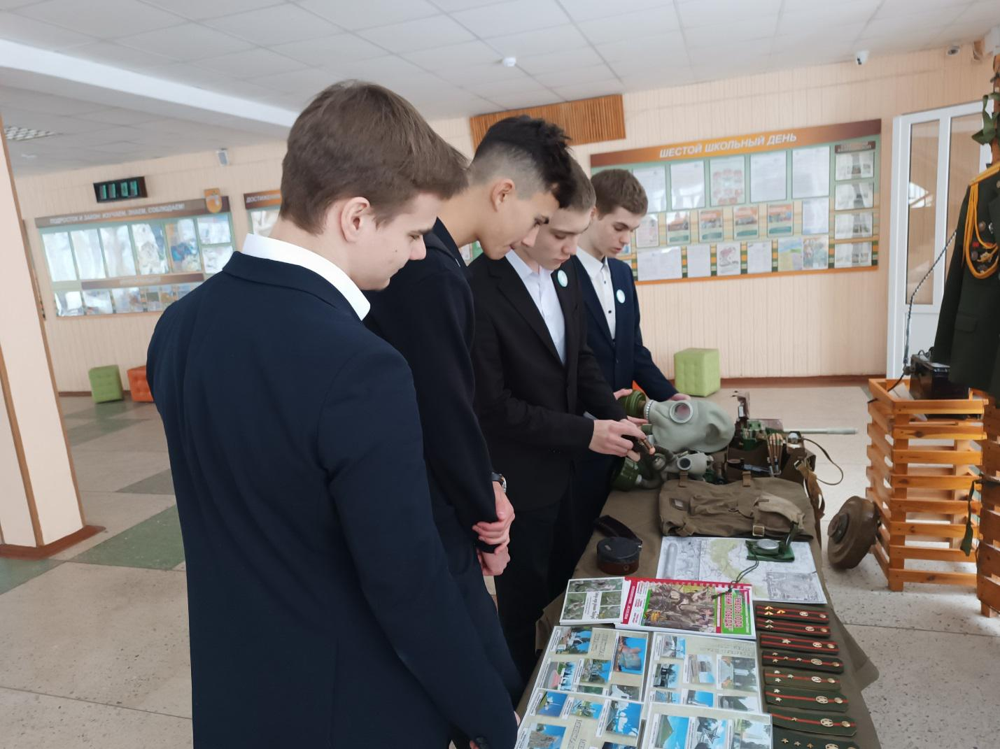

СВЯТОЕ ДЕЛО – РОДИНЕ СЛУЖИТЬ!
Интерактивная площадка, посвященная службе в Вооруженных Силах Республики Беларусь, начала свою работу 19 февраля в Государственном учреждении образования «Гимназия №1 г. Борисова». Структурно площадка включила три зоны: оружие и военное имущество, игровая зона и фотовернисаж, подготовленный активистами первичной организации БРСМ и членами клуба «Юнармеец» гимназии.



В ходе работы площадки гимназисты могли ознакомиться с образцами стрелкового и пневматического оружия, приборами химического и радиационного контроля, инженерным и топографическим имуществом, образцами парадной, повседневной и боевой формы одежды военнослужащих, узнать предназначение ее элементов, примерить на себя противогазы различных модификаций, снарядить магазина патронами различных калибров, принять участие в настольных играх патриотической направленности и познакомиться с патриотическим проектом «Сквозь года звенит Победа», отражающее в фотографиях восприятие защитников Отечества современной молодежью.

